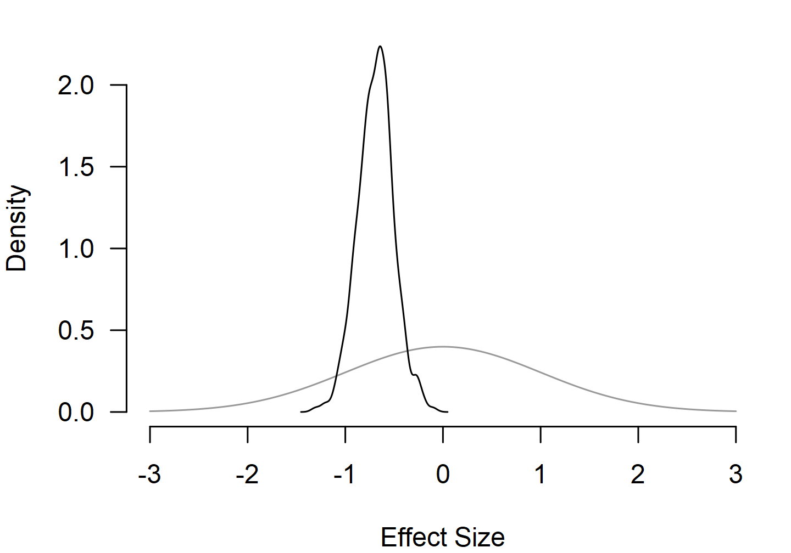
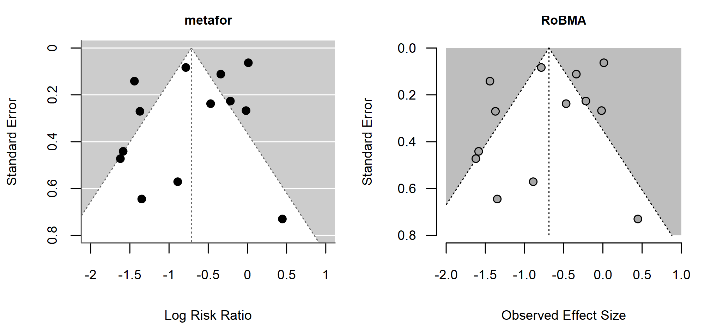
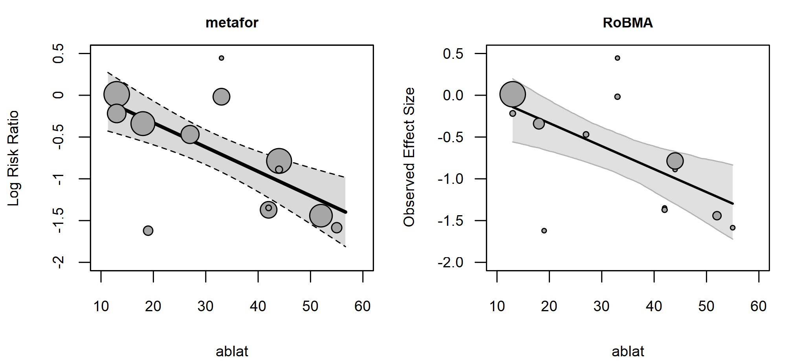
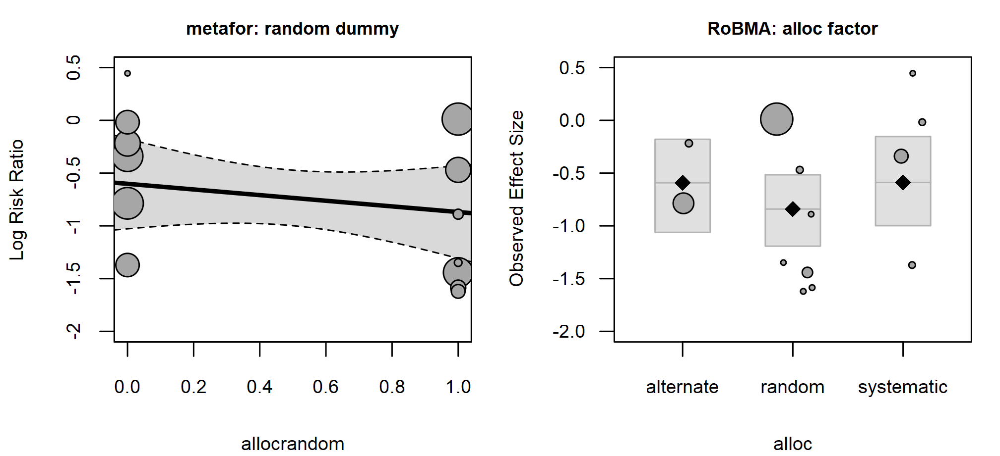
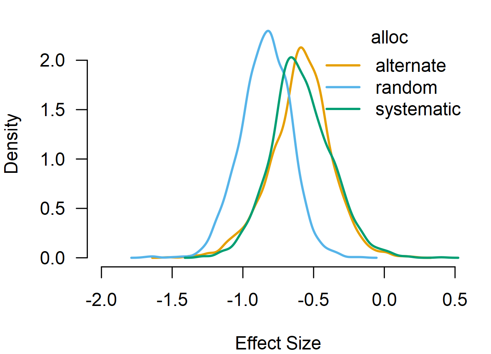
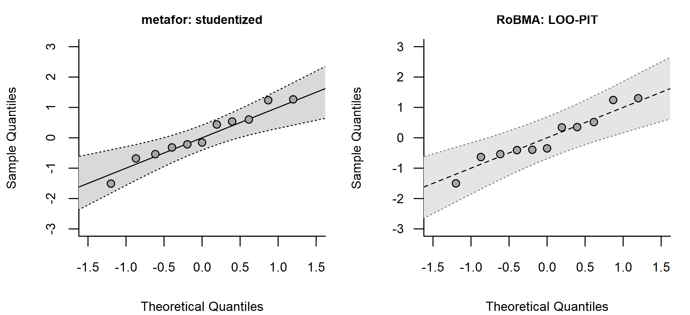

Bayesian Meta-Analysis
František Bartoš
28th of April 2026
Source:vignettes/v02-bayesian-meta-analysis.Rmd
v02-bayesian-meta-analysis.RmdThis vignette is a starting point for using the RoBMA R
package (Bartoš & Maier,
2020). We walk through the BCG vaccine dataset from the
metafor package (Viechtbauer, 2010), showing each
brma() call alongside its metafor::rma()
counterpart and building from a simple random-effects model up to
meta-regression with a continuous and a categorical moderator. The
interface is intentionally close to the metafor package:
the same effect-size columns, moderator formulas, and standard plotting
and diagnostic functions apply.
All brma() calls keep the default prior distributions;
see the Prior
Distributions vignette for the prior definitions and
customization options.
Random-Effects Model
The BCG vaccine dataset from the metadat package
contains 13 randomized trials on tuberculosis prevention.
escalc() computes log risk ratios yi and their
sampling variances vi.
data("dat.bcg", package = "metadat")
dat <- metafor::escalc(
ai = tpos, bi = tneg, ci = cpos, di = cneg,
measure = "RR", data = dat.bcg
)metafor::rma() fits the random-effects model.
fit1_metafor <- metafor::rma(yi, vi, data = dat, method = "REML")
fit1_metafor
#>
#> Random-Effects Model (k = 13; tau^2 estimator: REML)
#>
#> tau^2 (estimated amount of total heterogeneity): 0.3132 (SE = 0.1664)
#> tau (square root of estimated tau^2 value): 0.5597
#> I^2 (total heterogeneity / total variability): 92.22%
#> H^2 (total variability / sampling variability): 12.86
#>
#> Test for Heterogeneity:
#> Q(df = 12) = 152.2330, p-val < .0001
#>
#> Model Results:
#>
#> estimate se zval pval ci.lb ci.ub
#> -0.7145 0.1798 -3.9744 <.0001 -1.0669 -0.3622 ***
#>
#> ---
#> Signif. codes: 0 '***' 0.001 '**' 0.01 '*' 0.05 '.' 0.1 ' ' 1The matching Bayesian fit reuses the same effect-size columns.
measure = "RR" tells brma() to use the default
prior distributions for log risk ratios. The default prior distributions
are weakly informative and provide slight regularization toward
zero.
fit1_brma <- brma(
yi = yi, vi = vi, measure = "RR",
data = dat, seed = 1
)summary() reports posterior means, credible intervals,
and (suppressed here) MCMC convergence diagnostics. Convergence
diagnostics are included by default; chain-level visual diagnostics are
available via plot_diagnostic_trace(),
plot_diagnostic_density(), and
plot_diagnostic_autocorrelation().
summary(fit1_brma, include_mcmc_diagnostics = FALSE)
#>
#> Bayesian Random-Effects Model (k = 13)
#>
#> Estimates
#> Mean SD 0.025 0.5 0.975
#> mu -0.688 0.186 -1.056 -0.682 -0.292
#> tau 0.563 0.136 0.334 0.552 0.858The posterior mean for the log risk ratio is close to the REML
estimate from the metafor package; the slight pull toward
zero reflects the default Normal(0, 1) prior distribution.
pooled_effect() returns the same summary, backtransformed
to the risk-ratio scale via transform = "EXP":
pooled_effect(fit1_brma, transform = "EXP")
#>
#> Pooled Effect Size (risk ratio)
#> Mean Median 0.025 0.975
#> mu 0.511 0.506 0.348 0.747
#> Effect estimates are summarized on the risk ratio scale using EXP on the log risk ratio measure.plot() visualizes the posterior distribution, and
prior = TRUE overlays the prior distribution so the shift
from prior to posterior is visible.

Heterogeneity
metafor::confint() reports profile-likelihood confidence
intervals for tau^2, tau, I^2,
and H^2. summary_heterogeneity() is the
Bayesian counterpart, returning posterior summaries of the same
quantities.
confint(fit1_metafor)
#>
#> estimate ci.lb ci.ub
#> tau^2 0.3132 0.1197 1.1115
#> tau 0.5597 0.3460 1.0543
#> I^2(%) 92.2214 81.9177 97.6781
#> H^2 12.8558 5.5303 43.0680
summary_heterogeneity(fit1_brma)
#>
#> Heterogeneity Estimates:
#> Mean Median 0.025 0.975
#> tau 0.563 0.552 0.334 0.858
#> tau2 0.336 0.305 0.112 0.735
#> I2 91.153 92.030 80.883 96.532
#> H2 13.712 12.547 5.231 28.832Funnel Plot
funnel() plots observed effect sizes against the fitted
sampling distribution. We turn off the
sampling_heterogeneity argument, since the
RoBMA R package shows the full sampling distribution under
the model by default.
par(mfrow = c(1, 2), mar = c(4, 4, 2, 1), cex.axis = 0.8, cex.lab = 0.8, cex.main = 0.75)
metafor::funnel(fit1_metafor, main = "metafor", xlim = c(-2, 1), ylim = c(0, 0.8))
funnel(fit1_brma, main = "RoBMA", xlim = c(-2, 1), ylim = c(0, 0.8), sampling_heterogeneity = FALSE)
Meta-Regression with a Continuous Moderator
A continuous moderator can be added with the standard formula syntax
via the mods argument. ablat is the absolute
latitude of the trial, frequently used to explain BCG effect-size
variation.
fit2_metafor <- metafor::rma(yi, vi, mods = ~ ablat, data = dat)
fit2_metafor
#>
#> Mixed-Effects Model (k = 13; tau^2 estimator: REML)
#>
#> tau^2 (estimated amount of residual heterogeneity): 0.0764 (SE = 0.0591)
#> tau (square root of estimated tau^2 value): 0.2763
#> I^2 (residual heterogeneity / unaccounted variability): 68.39%
#> H^2 (unaccounted variability / sampling variability): 3.16
#> R^2 (amount of heterogeneity accounted for): 75.62%
#>
#> Test for Residual Heterogeneity:
#> QE(df = 11) = 30.7331, p-val = 0.0012
#>
#> Test of Moderators (coefficient 2):
#> QM(df = 1) = 16.3571, p-val < .0001
#>
#> Model Results:
#>
#> estimate se zval pval ci.lb ci.ub
#> intrcpt 0.2515 0.2491 1.0095 0.3127 -0.2368 0.7397
#> ablat -0.0291 0.0072 -4.0444 <.0001 -0.0432 -0.0150 ***
#>
#> ---
#> Signif. codes: 0 '***' 0.001 '**' 0.01 '*' 0.05 '.' 0.1 ' ' 1
fit2_brma <- brma(
yi = yi, vi = vi, measure = "RR",
mods = ~ ablat,
data = dat, seed = 1
)
summary(fit2_brma, include_mcmc_diagnostics = FALSE)
#>
#> Bayesian Mixed-Effect Model (k = 13)
#>
#> Common Estimates
#> Mean SD 0.025 0.5 0.975
#> tau 0.303 0.131 0.088 0.289 0.587
#>
#> Meta-Regression
#> Mean SD 0.025 0.5 0.975
#> intercept 0.217 0.275 -0.362 0.237 0.712
#> ablat -0.028 0.008 -0.043 -0.028 -0.011regplot() produces the familiar bubble plot with the
fitted regression line.
par(mfrow = c(1, 2), mar = c(4, 4, 2, 1), cex.axis = 0.8, cex.lab = 0.8, cex.main = 0.75)
metafor::regplot(fit2_metafor, main = "metafor", xlim = c(10, 60), ylim = c(-2, 0.5))
regplot(fit2_brma, main = "RoBMA", xlim = c(10, 60), ylim = c(-2, 0.5))
predict() returns posterior summaries for user-specified
moderator values.
new_data <- data.frame(ablat = c(15, 35, 55))
predict(fit2_brma, newdata = new_data, type = "terms")
#>
#> Location Term Posterior Prediction:
#> Mean Median 0.025 0.975
#> mu[1] -0.196 -0.182 -0.587 0.123
#> mu[2] -0.746 -0.743 -0.994 -0.506
#> mu[3] -1.297 -1.307 -1.722 -0.835Comparing Models with Bayes Factors
Marginal likelihoods enable model comparison via Bayes factors (Kass & Raftery,
1995). After attaching marginal likelihoods to both fits with
add_marglik(), bf() returns the Bayes factor
for one model against another.
fit1_brma <- add_marglik(fit1_brma)
fit2_brma <- add_marglik(fit2_brma)
bf(fit2_brma, fit1_brma)
#> Bayes factor in favor of Model 1 over Model 2: 14.76119The Bayes factor quantifies how much the data shift the relative
predictive support between the two models. Here we obtain strong
evidence in favor of the model including the ablat
predictor.
Adding a Categorical Moderator
alloc is a three-level factor describing the trial
allocation method (random, alternate, systematic). The same formula
syntax extends the meta-regression.
fit3_metafor <- metafor::rma(yi, vi, mods = ~ ablat + alloc, data = dat)
fit3_brma <- brma(
yi = yi, vi = vi, measure = "RR",
mods = ~ ablat + alloc,
data = dat, seed = 1
)
summary(fit3_brma, include_mcmc_diagnostics = FALSE)
#>
#> Bayesian Mixed-Effect Model (k = 13)
#>
#> Common Estimates
#> Mean SD 0.025 0.5 0.975
#> tau 0.344 0.144 0.100 0.330 0.674
#>
#> Meta-Regression
#> Mean SD 0.025 0.5 0.975
#> intercept 0.287 0.355 -0.468 0.312 0.929
#> ablat -0.026 0.009 -0.042 -0.027 -0.008
#> alloc[random] -0.249 0.251 -0.749 -0.248 0.251
#> alloc[systematic] 0.003 0.276 -0.489 -0.017 0.580The RoBMA R package also allows direct visualization of
categorical moderators in the bubble plot (the metafor
package only supports a single dummy coefficient at the moment).
par(mfrow = c(1, 2), mar = c(4, 4, 2, 1), cex.axis = 0.8, cex.lab = 0.8, cex.main = 0.75)
metafor::regplot(fit3_metafor, mod = "allocrandom", main = "metafor: random dummy", ylim = c(-2, 0.5))
regplot(fit3_brma, mod = "alloc", main = "RoBMA: alloc factor", ylim = c(-2, 0.5))
marginal_means() computes estimated marginal means for
each moderator term, averaging over the other moderators in the fit.
Continuous moderators (here ablat) are evaluated at
,
,
and
standard deviations of the predictor; categorical moderators (here
alloc) at each level.
emm <- marginal_means(fit3_brma)
summary(emm)
#>
#> Marginal Means:
#> Mean SD 0.025 0.5 0.975
#> intercept -0.592 0.217 -1.061 -0.585 -0.180
#> ablat[-1SD] -0.212 0.247 -0.737 -0.197 0.234
#> ablat[0SD] -0.592 0.217 -1.061 -0.585 -0.180
#> ablat[1SD] -0.971 0.254 -1.494 -0.971 -0.429
#> alloc[alternate] -0.592 0.217 -1.061 -0.585 -0.180
#> alloc[random] -0.841 0.177 -1.192 -0.833 -0.516
#> alloc[systematic] -0.588 0.214 -0.999 -0.605 -0.154The plot() function visualizes the posterior
distribution of the estimated marginal means.
par(mar = c(4, 4, 1, 1), cex.axis = 0.8, cex.lab = 0.8, cex.main = 0.75)
plot(emm, parameter = "alloc", xlim = c(-2, 0.5), lwd = 2)
Model Diagnostics
The RoBMA R package implements a wide set of model fit
diagnostics. Here, we highlight only a few.
metafor::rstudent() returns frequentist studentized
residuals computed by deletion; RoBMA::rstudent() returns
LOO-PIT residuals, which propagate posterior uncertainty and leverage
through leave-one-out prediction. The two definitions are comparable but
not identical; the RoBMA R package’s LOO-PIT residuals
first require LOO computation via add_loo().
fit3_brma <- add_loo(fit3_brma)
head(rstudent(fit3_metafor)$z)
#> [1] 0.4369227 -0.2024807 -0.3084436 -0.1187827 -0.4726194 0.4726194
head(rstudent(fit3_brma)$z)
#> [1] 0.3515262 -0.3483678 -0.3940142 -0.4052585 -0.5379945 0.3420329qqnorm() checks the residuals against a standard normal
reference.
par(mfrow = c(1, 2), mar = c(4, 4, 2, 1), cex.axis = 0.8, cex.lab = 0.8, cex.main = 0.75)
qqnorm(fit3_metafor, main = "metafor: studentized", xlim = c(-1.5, 1.5), ylim = c(-3, 3))
qqnorm(fit3_brma, main = "RoBMA: LOO-PIT", xlim = c(-1.5, 1.5), ylim = c(-3, 3))
influence() collects DFFITS, Cook’s distance, COVRATIO,
leverage, and DFBETAS where the diagnostic is available.
inf_brma <- influence(fit3_brma)
head(inf_brma$inf)
#> rstudent dffits cook.d cov.r tau.del hat
#> Study 1 0.3515262 0.09742742 0.003051713 1.352210 0.3611943 0.08676324
#> Study 2 -0.3483678 -0.16031362 0.009344464 1.672075 0.3683854 0.19988035
#> Study 3 -0.3940142 -0.09201147 0.002596289 1.247964 0.3566583 0.06776189
#> Study 4 -0.4052585 -0.25448939 0.028780571 2.209083 0.3775556 0.42974702
#> Study 5 -0.5379945 -0.24916951 0.024724592 1.683551 0.3457254 0.53991804
#> Study 6 0.3420329 0.21231431 0.022986373 2.516078 0.3785678 0.69164774